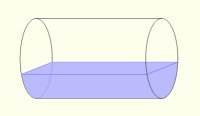

Although a cylinder is technically not a prism, it shares many of the properties of a prism. Like prisms, the volume is found by multiplying the area of one end of the cylinder (base) by its height.
Since the end (base) of a cylinder is a circle, the area of that circle is given by the formula:
Multiplying by the height h we get
where:
π is Pi, approximately 3.142
r is the radius of the circular end of the cylinder
h height of the cylinder
| ENTER ANY TWO VALUES | ||
| Radius | clear | |
| Height | clear | |
| Volume | clear | |
Use the calculator above to calculate height, radius or volume of a cylinder.
Enter any two values and the missing one will be calculated. For example: enter the radius and height, and press 'Calculate'. The volume will be calculated.
Similarly, if you enter the height and volume, the radius needed to get that volume will be calculated.

One practical application is where you have horizontal cylindrical tank partly filled with liquid. Using the formula above you can find the volume of the cylinder which gives it's maximum capacity, but you often need to know the volume of liquid in the tank given the depth of the liquid.
This can be done using the methods described in Volume of a horizontal cylindrical segment.
Recall that an oblique cylinder is one that 'leans over' - where the top center is not over the base center point. In the figure above check "allow oblique' and drag the top orange dot sideways to see an oblique cylinder.
It turns out that the volume formula works just the same for these. You must however use the perpendicular height in the formula. This is the vertical line to left in the figure above. To illustrate this, check 'Freeze height'. As you drag the top of the cylinder left and right, watch the volume calculation and note that the volume never changes.
See Oblique Cylinders for a deeper discussion on why this is so.